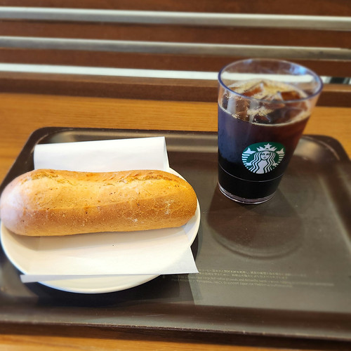
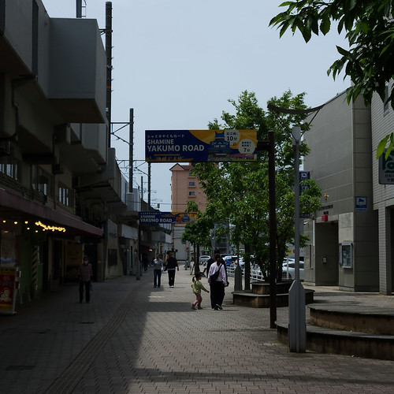
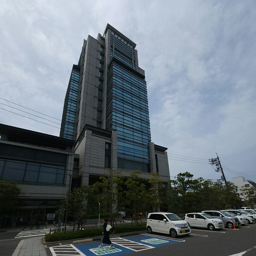
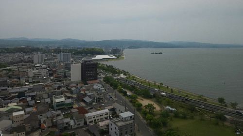
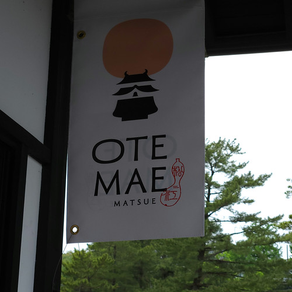
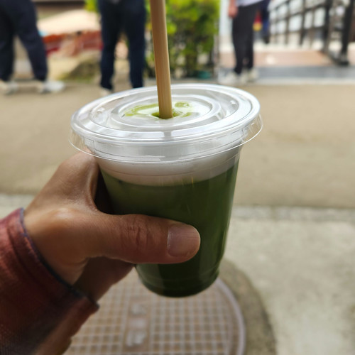
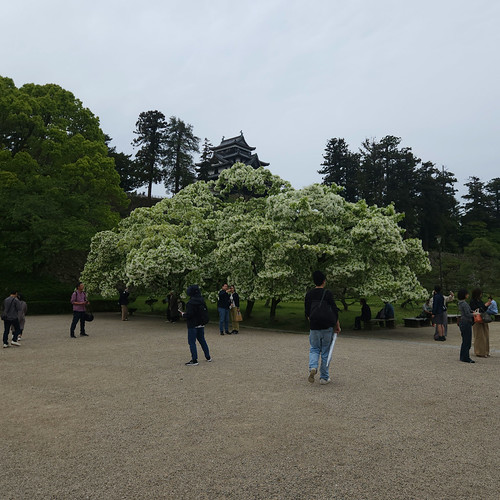
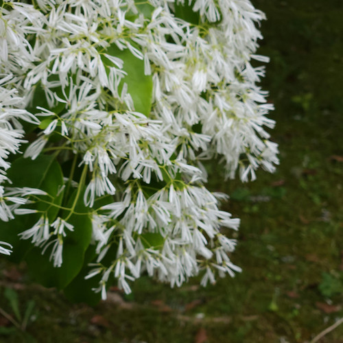
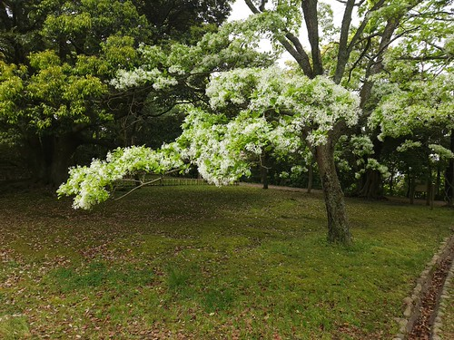

お散歩カメラ 2026-05-02

みなさま GW いかがお過ごしでしょうか。 甥っ子は職場から有休消化のために 2026-04-29 から 2026-05-10 まで是非休んでくれと頼まれたそうで。 ワーカホリックはこれだから（笑）
そういや先月は一度も「お散歩カメラ」の記事を書いてない。 いや，お散歩もしてたし写真も撮りまくってたんですよ，ブログ記事にしなかっただけで。
というわけで久しぶりのお散歩カメラ記事。
他人の振り見て我が振り直せ
午前中の用事を終わらせ松江駅のスタバで休憩していたのだが

腰の曲がったお年寄りが杖をつきながら歩いているのが見える。 「そういや，うちの親も腰が悪くなってからガニ股歩きになったなぁ」と思い，何となく AI に「年寄りで腰の悪い人がガニ股歩きになるのは骨盤の問題？」と訊いてみたら，以下のような回答が返ってきた。
しかも続けて
などと脅される。 骨折入院中のリハビリでも左側の中殿筋が弱ってると指摘されたんだよなぁ。 もっとたくさん歩かないと。
合銀ビルへ行こう
というわけで，お散歩に出発。 山陰本線の線路沿いを西に歩いていく。

まずはどこに行こう。 そうだ。 久しぶりに合銀ビルを登ってみよう。

合銀ビル14Fの展望フロアは観光スポットとしても有名で，宍道湖を中心とした松江の街並みを一望できる。 しかも夕日も綺麗らしい（夕方に登ったことがないけど）。

んー。 今日は曇ってるからなぁ。 また今度挑戦しよう。
OTEMAE MATSUE
山陰地元のお店情報などを発信されている「うんせきブログ」さんの
という記事を見かけたので行ってみることにした。

ブログ記事にも書いてあったけど「大手前」と「お点前」の駄洒落っすかね（笑）
持病の関係でカフェイン自粛中ではあるが，せっかくなので抹茶ラテをチョイス。 したら本当に抹茶茶碗でお茶を点ててくれた。 すげぇ！ 完成品はこちら

意図的に甘みを抑えてあって，抹茶の香りと味が素晴らしい。 初めて抹茶ラテが美味しいと思ったよ。 これは贔屓にしないと。 次に行くときは温かい方も頂こう。
満開のナンジャモンジャ
先週に松江城に行ったときは五分咲きくらいだったナンジャモンジャ（ヒトツバタゴ）が満開になっていた。

椿谷公園のナンジャモンジャも満開だった。


これが満開になると5月に入ったって感じがする。 この連休の後半では何やらイベントもするらしい。
GW にお越しになられる方は是非！
しかし，先週の松江城周辺は閑古鳥が鳴いていて「もう『ばけばけ』特需も終わりじゃねぇ」と思っていたのだが，今日は結構な人出でビックリした。 日本語以外を喋る観光客も多かったし。 うんうん。みなさん松江でお金を落として下さい 🙇
おまけ
そういえば，先日撮った写真で
コメントで「テクスチャがプロみたい」と褒められました。 わいわい。 たくさん写真を撮ってると年に1枚くらいは褒められることがあります。